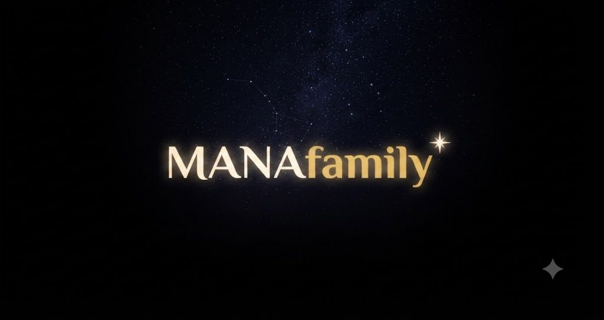

La Terre de MANA.
Tout commence en Finistère. MANA arrive en Bretagne : en Penn Ar Bed, ce territoire où l'entraide est toute naturelle. Des voisins. Des familles. Des associations. Une Maison MANA. Un même horizon.
Tout commence en Finistère. MANA arrive en Bretagne : en Penn Ar Bed, ce territoire où l'entraide est toute naturelle. Des voisins. Des familles. Des associations. Une Maison MANA. Un même horizon.

Une application pour veiller sur ses proches, s'entraider et transmettre ce qui compte vraiment.

Votre attention n'est jamais vendue.
Votre mémoire vous appartient.
Vos proches passent avant les algorithmes.
Le temps partagé mérite d'être reconnu.